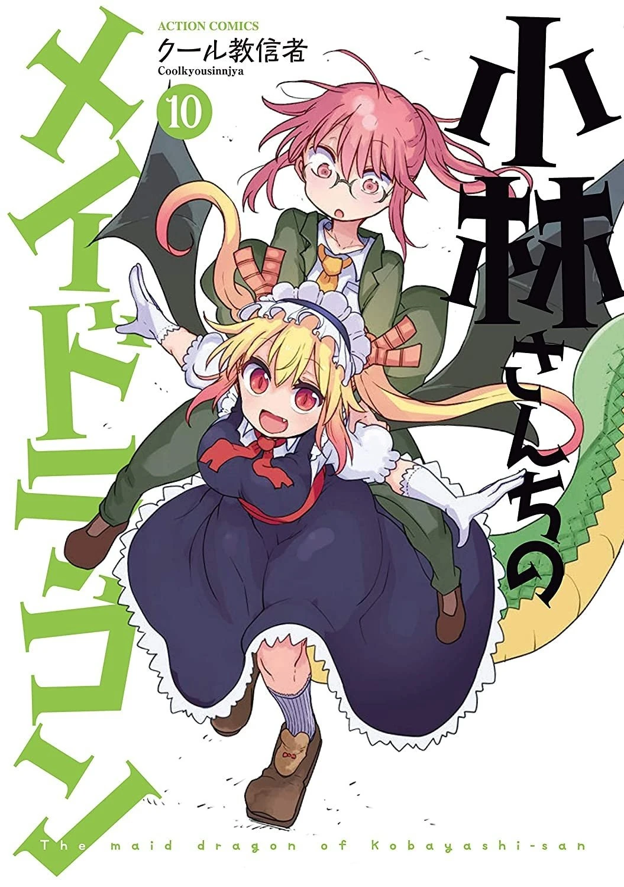
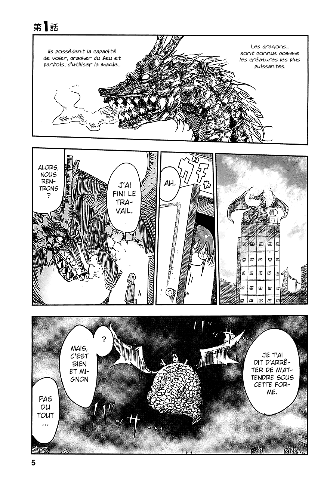

Kobayashi-san Chi no Maid Dragon
by Coolkyousinnjya
Synopsis
Kobayashi, an ordinary office worker, encounters a dragon named Tohru after a drunken night in the mountains. When Tohru transforms into a human girl and offers to become Kobayashi's maid, her quiet life turns into a chaotic and heartwarming adventure. As more dragons enter their lives, they discover friendship, family, and the unexpected joys of living together in the human world.
Chapter 1

After a night of drinking, Kobayashi encounters Tohru, a dragon from another world who is injured and stranded in the mountains. Kobayashi helps her, and Tohru becomes deeply grateful to the human who showed her kindness.
The next morning, Tohru appears at Kobayashi's apartment in human form, dressed as a maid and determined to repay her kindness by serving her. Kobayashi's ordinary daily routine soon becomes anything but ordinary as she begins living with a dragon.
— End of chapter —